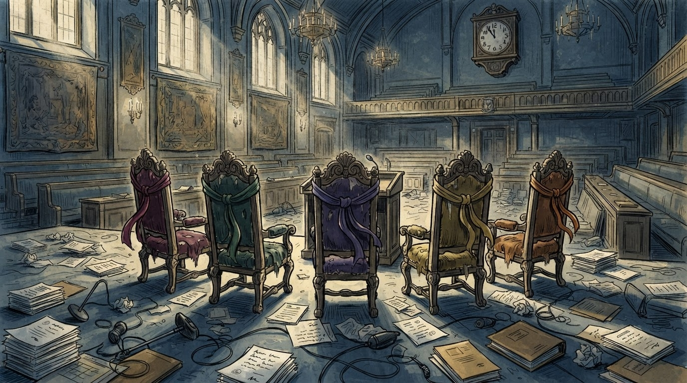
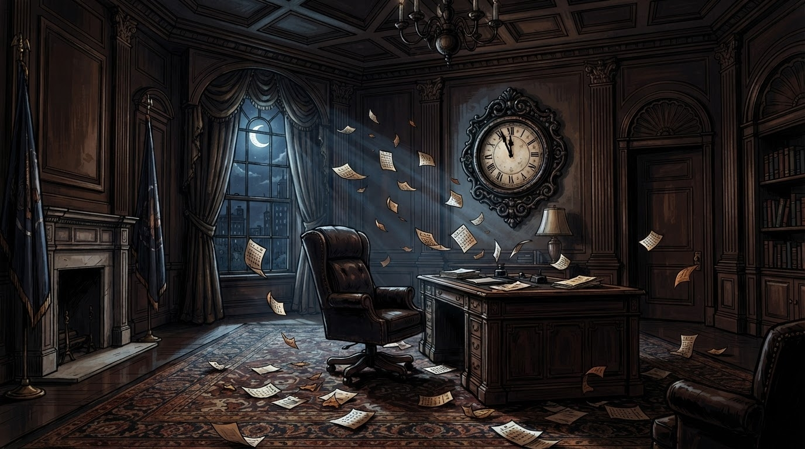

Politikë
Gazeta Satirike e Kosovës dhe Shqipërisë — lajme që nuk duhet t'i besoni, por i lexoni gjithsesi
Ekspertët thonë se posti i ushtruesit të detyrës nuk mund të vazhdojë përjetë. Redaksia jonë propozon zgjidhjen e vetme logjike: president me abonim mujor, pagesa në rrogëz.

Sipas Kushtetutës, posti i ushtruesit të detyrës së presidentit ka afat gjashtëmujor — një lloj abonimi shtetëror që skadon më 4 tetor. Deputetët e kanë kuptuar problemin dhe e kanë zgjidhur në stilin e tyre të preferuar: duke e diskutuar gjatë, pa e zgjidhur fare.
"Ne kemi kohë deri më 4 tetor", thotë me qetësi një zyrtar i afërt me procesin, sikur data të ishte një takim dentisti që mund të shtyhet edhe një herë. Sipas tij, "presioni kohor na ndihmon të përqendrohemi" — teori që redaksia jonë e ka testuar edhe me faturat e energjisë, pa sukses.
"Nuk ka vakum institucional, sepse ne e kemi mbushur vakumin me diskutime." — një deputet, duke shpjeguar parimin e fizikës kushtetuese kosovare
Sipas ekspertëve ligjorë, ndryshimi i personit që ushtron detyrën presidenciale nuk mund të rinisë afatin nga zero — një rregull që disa deputetë e kanë kuptuar si "sfidë personale". Ndërkohë, seanca konstituive vazhdon të shtyhet për të premten, gjë që bën që "e premtja" të jetë tashmë dita më e populluar e kalendarit kosovar.
Institucionet po ashtu kanë njoftuar se, në rast të mos-zgjedhjes deri më 4 tetor, çështja shkon në Gjykatën Kushtetuese — vendi i vetëm në Kosovë ku diskutimet zgjasin edhe më shumë se në Kuvend, por të paktën me togë zyrtare.
Deri atëherë, ora e madhe e Kuvendit vazhdon të tregojë "pak minuta para diçkaje" — ndërsa deputetët, siguron redaksia jonë, po e studiojnë me kujdes maksimal fjalën "urgjencë", pa e zbatuar akoma.